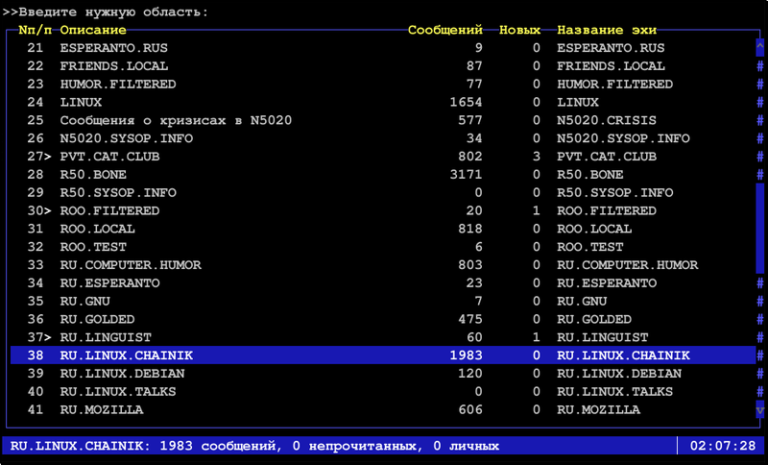

Воспоминания о фидо или "меня зовут 2:/5054:74.20"

Если оглянуться назад и попытаться ответить на вопрос, по какому периоду своей жизни я тоскую больше всего и в какой период прошлого я хотел бы отправиться на денёк-другой в гости, то наверное это будет примерно второй-третий курс университета. Почему именно туда? Множество новых знакомых, первая работа, первые отношения, погружение в программирование и linux, появление первых телефонов, корявые ява-приложения, подключение витухи на 64к, посиделки с друзьями, дни рождения, записи песен, дача, сборка сервера внутри дивана, и отдельным пунктом - фидо. Фидо - это удивительное явление. Если бы не было фидо, на интернет я бы смотрел совершенно другими глазами. Сейчас интернет через призму моего восприятия представляет из себя огромную такую помойку, долину мусорных куч, среди которых где-то на горизонте высятся небоскрёбы больших корпораций - гугла, яндекса, IBM, огромные грязные мегалиты коммуналок "Вконтакте" и Facebook, обветшалый LiveJournal, с доброй половиной заколоченных окон, дом престарелых "Одноклассники"... И в тени этих живых и доживающих огромных и не очень зданий, копаются в мусорных кучах бобики. Огромное количество бобиков в бессчётном количестве куч. Кто-то радостно похрюкивая кушает какашки, кто-то эти какашки воспроизводит в комментариях, кто-то пытается найти ценную и косточку той или иной степени свежести. У кого нюх получше - те находят то, что искали, остальные плещутся в отходах, обмазанные рекламой казино, курсов игры на форексе и предложением купить настоящий айфон за полцены.
Теги: fido, ностальгия